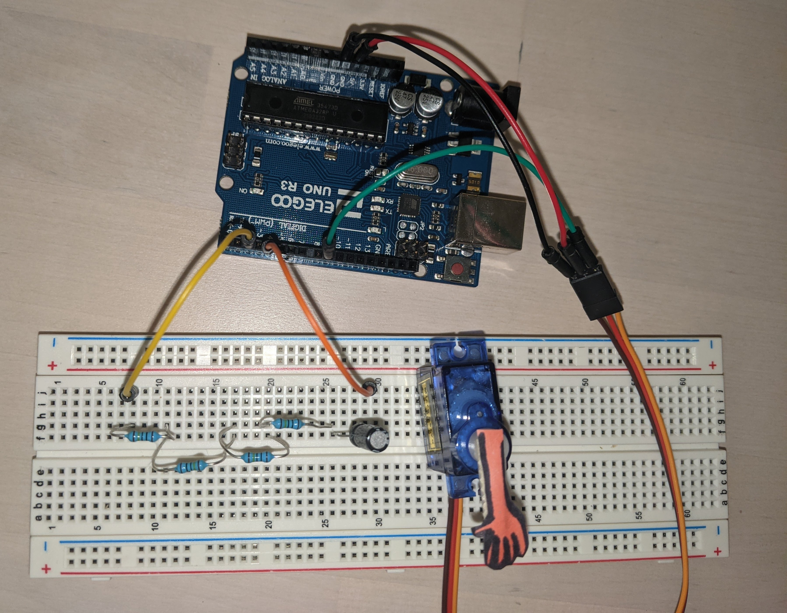

A4: Libraries!
Anti-Loneliness Bot 4000
Kierra Long
Schematic
This is my schematic of the circuit.
It is made of a Servo (as output) and a Capacitator (as input). A 10 uF Electolytic Capacitor is connected from pin 4 (Output Pin), then
to four 1M Ohm resistors, to pin 2 (Sensor Pin).The servo is attached to Pin 9 (a PWM pin), ground, and power, through its cables.
Resistor Rational:
Keeping in mind that a resistor of 1M Ohm with the capacitator will require absolute touch, and a resistor of
10M Ohm will result in 4-6 inches of range (from the lecture slides), I decided to find a balance of resistors that
would make the capacitor a bit more sensitive than absolute touch. I played around with adding a few 1M Ohm resistors,
and 4 seemed like a good sensitivity. I decided to use 4M Ohm resistance in my capacitor circuit.
Created with https://www.circuit-diagram.org/
Circuit
This is the circuit based off of the previous schematic, made using a breadboard and Arduino. To use the Servo as the robot, I taped a paper hand on top of the part that moves.
Code
//Sources
//Example code from Arduino for Smoothing and Callibration
#include
#include
Servo myServo; // create a servo object
CapacitiveSensor cs_4_2 = CapacitiveSensor(4,2); //create the capacitor sensor object
//Smoothing variables
const int numReadings = 10; //Reading var for smoothing
int readings[numReadings]; // the readings from the analog input
int readIndex = 0; // the index of the current reading
int total = 0; // the running total
int average = 0; // the average
//Callibration variables
int sensorValue = 0; // the sensor value
int sensorMin = 1023; // minimum sensor value
int sensorMax = 0; // maximum sensor value
int newValue = 0; // maximum sensor value
int angle= 0; // setting the angle of the servo
int inputPin = 2; //setting input pin of capacitor
void setup() {
Serial.begin(9600); // initialize serial communication with computer
myServo.attach(9); // attach pin 9 to the servo object
//Smoothing
for (int thisReading = 0; thisReading < numReadings; thisReading++) {
readings[thisReading] = 0; // initialize all the readings to 0:
}
//Callibration
while (millis() < 5000) { //For first 5 seconds
sensorValue = cs_4_2.capacitiveSensor(30); //take the value of the capacitor
if (sensorValue > sensorMax) { //if larger than current max
sensorMax = sensorValue; // record the max sensor value
}
if (sensorValue < sensorMin) { //if smaller than current min
sensorMin = sensorValue; // record the minimum sensor value
}
}
}
void loop() {
//Smoothing the capacitor value
total = total - readings[readIndex]; // subtract the last reading:
readings[readIndex] = cs_4_2.capacitiveSensor(30); //set reading to sensor reading
total = total + readings[readIndex]; // add the reading to the total:
readIndex = readIndex + 1; // advance to the next position in the array:
if (readIndex >= numReadings) { // if we're at the end of the array...
readIndex = 0; // ...wrap around to the beginning:
}
average = total / numReadings; // calculate the average
newValue = average; // making a new value to constrain
if (average > sensorMax) { //if out of bounds
newValue = sensorMax; //set as in bound
} else if (average< sensorMin) { //if out of bounds
newValue = sensorMin; //set as in bound
}
angle = map(average, sensorMin, sensorMax, 0, 90); //map capacitor reading to angle value between 0 and 90
myServo.write(angle); //write the angle to the servo
delay(15); //wait a bit
//Serial printing for debugging
// Serial.print("Min ");
// Serial.print(sensorMin);
// Serial.print(" Max ");
// Serial.print(sensorMax);
// Serial.print(" before ");
// Serial.print(average);
// Serial.print(" after ");
// Serial.println(newValue);
Serial.println(angle);
delay(100);
}
The capacitor touch is the input, and the servo angle is the output. To make this, I used a library for both the capacitor and Servo, code to callibrate the capacitor, as well as smooth the result, and I mapped the input capacitor circuit voltage to Servo angle (after being constrained to max and min values). The calibration during the first 5 seconds of the program measures the highest and lowest values the input pin reads, and ensures accuracy by constraining the voltage readings later to these values.
Operation

This is a gif of the operation of the Anti-Loneliness Bot 4000. In spirit of Valentine's day I made the Anti-Loneliness Bot 4000, who will always be here to hold your hand :'). If you touch the capacitor, the Anti-Loneliness Bot 4000 will move its hand to put it on top of yours. But if you leave the Anti-Loneliness Bot 4000's hand, it will pull its hand away too.